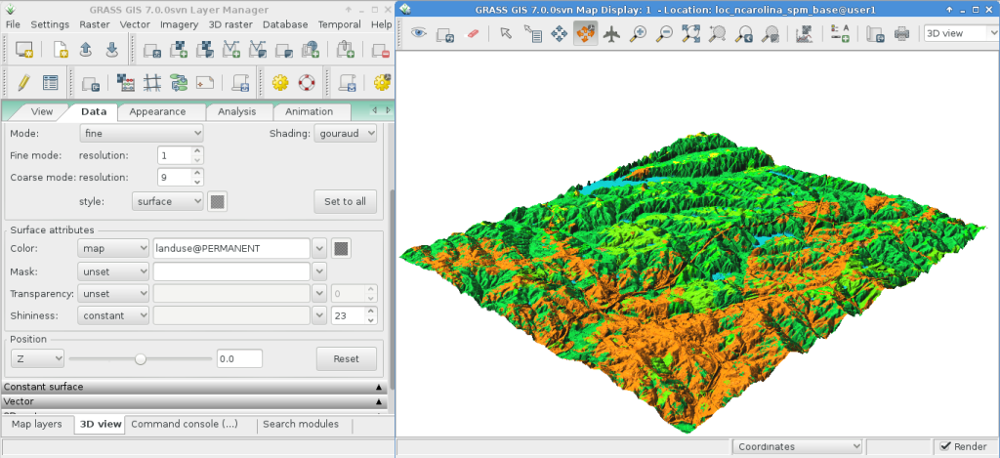

Guida rapida GRASS GIS¶
GRASS GIS è un potente GIS che vi permette di visualizzare, gestire, analizzare e modificare dati geospaziali.
Contenuti
Avvia GRASS¶
Cliccare sulla connessione GRASS in menu
Dalla finestra «Welcome to GRASS GIS», selezionare il dataset «nc_basic_spm_grass7» per la location e «user1» per il mapset.
Clicca su Avvia sessione GRASS.

Questo lancerà GRASS nella interfaccia grafica (scritta in wxPython).
Suggerimento
Se sei su un netbook con un display molto piccolo (risoluzione 800x600) la schermata di avvio potrebbe essere un po” accartocciata e il pulsante [Avvia GRASS] nascosto dietro le liste delle località e dei set di mappe. Se questo ti succede la soluzione è trascinare l’angolo della finestra per renderla un po” più grande. Potresti dover spostare la finestra oltre la parte superiore dello schermo per ottenere lo spazio necessario (tieni premuto il tasto Alt e clicca con il tasto sinistro del mouse per trascinare la finestra).
Visualizzare una mappa¶

Una volta che dentro, seleziona la mappa raster «elevation» dal mapset PERMANENT per visualizzarla.
Vai nella finestra GIS Layer Manager.
Clicca sul pulsante della barra degli strumenti a scacchiera con un «+».
Selezionare il nome della mappa che volete dalla lista «mappe da visualizzare» e cliccare Ok.
Clicca sul pulsante della barra degli strumenti con un «+» e una polilinea piegata che assomiglia un po” a una «V».
Selezionare il livello vettoriale «roadsmajor» dal mapset PERMANENT e cliccare su Ok.
Se c’è bisogno, cliccare con il tasto destro del mouse sul livello della mappa raster e scegliere «Zoom alla mappa selezionata».
Ora dovreste vedere le mappe visualizzare.
Tracciare un profilo altimetrico¶

Di nuovo nella finestra GIS Layer Manager clicca sul nome della mappa raster elevation per selezionarla. Poi nella finestra Map Display, a destra dei pulsanti di zoom sulla barra degli strumenti Map Display c’è un’icona con un grafico a linee e una scacchiera. Clicca su quella e seleziona Profile surface map. Il set di mappe @PERMANENT viene cercato automaticamente. Se la mappa non è elencata automaticamente, scegli di nuovo la mappa elevation come strato raster e premi Ok. Nella finestra GRASS Profile Analysis Tool seleziona il secondo pulsante da sinistra, ti permette di impostare la linea di profilo, cliccalo e traccia alcuni punti sulla tela Map Display. Quando hai finito torna alla finestra Profilo. Clicca sul pulsante I/O all’estrema destra per chiudere la finestra del profilo.
Aggiustare i colori di una mappa rastet¶
Ora vedrai la tua nuova mappa raster aggiunta alla lista dei layer insieme alla mappa raster di elevazione, tranne che questa volta sarà nel tuo mapset di lavoro «user1». Potresti togliere il segno di spunta dalla casella di visibilità del layer elevation in modo che i due layer raster non si sovrappongano l’uno all’altro. Clicca sulla casella di controllo per visualizzare la tua nuova mappa se non viene visualizzata automaticamente. I colori potrebbero non essere come vorresti, quindi cambiali. Con il DEM frattale selezionato nella lista dei layer, clicca con il tasto destro del mouse sul nome di questo layer raster e scegli «Set color table». In alternativa, puoi gestire le tabelle di colore nel menu Raster selezionando . Nella scheda “Define” clicca sul menu a tendina per l’opzione «Name of color table» e scegline una dall’elenco. «terrain» o «srtm» sono buone scelte. Una volta fatto, clicca sul pulsante [Run] e chiudi la finestra di dialogo r.colors. I colori dovrebbero quindi aggiornarsi automaticamente.
Creare una mappa dei rilievi ombreggiato¶

Ora creererai una mappa di rilievo ombreggiata del layer elevation che hai visto prima. Inizia verificando che la regione computazionale sia impostata con la mappa raster di interesse, «elevation» nel mapset PERMANENT. Per fare questo, assicurati che sia caricato nella lista dei layer della finestra principale di GIS Layer Manager, clicca con il tasto destro sul suo nome e seleziona «Set computation region from selected map(s)». Se necessario, clicca sulla scheda «Layers» in basso per tornare all’elenco dei layer.
Nel menu Raster seleziona (Terrain analysis è circa a metà del menu Raster), e apparirà la finestra di controllo del modulo. Seleziona come nome in ingresso la mappa «elevation» @PERMANENT e come mappa in uscita puoi specificare «shaded_relief». Una volta fatto clic su [Run]. Ora dovresti trovare la nuova mappa shaded_relief @user1 aggiunta nella vostra lista dei layer. Deseleziona gli altri layer raster per visualizzare solo il layer raster di rilievo ombreggiato appena creato.
Aggiungi spartiacque e corsi d’acqua¶
Seleziona ancora una volta la mappa elevation @PERMANENT. Se hai cambiato la regione dall’ultimo passo, clicca di nuovo con il tasto destro del mouse sul nome del layer e clicca su dal menu contestuale per considerare l’intera mappa per il calcolo del watsershed.
Nota
La visualizzazione e lo zoom della mappa di wxGUI sono indipendenti e non influenzano i calcoli di elaborazione. Controlla la regione di calcolo in qualsiasi momento con ; questo è di fondamentale importanza per qualsiasi operazione di griglia raster. Mappe raster con limiti e risoluzione diversi saranno ricampionate alla regione di calcolo corrente al volo.
Poi, nel menu Raster scegli . Questo aprirà il modulo r.watershed. Seleziona lo strato elevation come mappa in ingresso, nella stessa scheda “Inputs” imposta la soglia «Minimum size of the external watershed basin» a 10000 celle, poi nella scheda “Outputs” inserisci «elev.basins» per l’opzione «Name for basins raster map» basins e «elev.streams» per l’opzione «Name for output stream segments raster map» streams appena sotto. Poi clicca su [Run].
Di nuovo nella finestra GIS Layer Manager controlla che queste due nuove mappe raster siano nella lista dei layer e assicurati che la mappa dei bacini sia spuntata per la visualizzazione nella casella a sinistra del nome del layer. Potresti deselezionare la mappa dei corsi d’acqua per ora. Poi, clicca con il tasto destro del mouse sul nome della mappa raster «elev.basins» e seleziona «Change opacity level». Impostalo a circa il 50% che renderà nuovamente la visualizzazione della mappa. Trascina un layer di mappa (come la mappa di rilievo ombreggiata creata in precedenza) in basso nella lista dei layer se vuoi che sia disegnato dietro il layer di mappa dei bacini spartiacque, e assicurati di spuntare la sua casella di visibilità per vederlo come sfondo.

Nella finestra GIS Layer Manager clicca sul pulsante Add various overlays e Add grid layer. Per la dimensione della griglia metti 5000 (in unità della mappa, qui metri). Una volta fatto premi OK. Opzionalmente puoi cambiare i colori per le linee della griglia e le etichette di testo.
Per aggiungere una barra di scala, vai nella finestra Map Display e premi il pulsante «Add map elements» a destra di dove hai selezionato lo strumento Profilo prima e seleziona «Show/hide scalebar» poi clicca Ok. Una barra delle scale apparirà in alto a sinistra della mappa. Trascinala in basso a destra.
Ora starai pensando che questi font sono un po” spogli. Questo è facilmente risolvibile nei menu di GIS Layer Manager, apri e nella scheda Map Display clicca sul pulsante [Set font], scegline uno (per esempio DajVu Sans Bold), e poi [Save] o [Save for this session only] nella finestra Preferences. Dovrai fare un re-render completo per vedere il cambiamento, quindi clicca sul pulsante re-render il primo nella finestra Map Display. I font saranno ora molto più belli.
Lavora coi moduli vettoriali¶
I compiti precedenti hanno coperto solo alcuni moduli raster. Non lasciare che questo ti dia l’idea che GRASS GIS sia solo per mappe raster - il motore vettoriale e i moduli sono altrettanto completi di quelli raster. GRASS GIS mantiene un motore vettoriale completamente topologico che permette ogni sorta di analisi molto potente.

Continuando con i bacini spartiacque creati sopra, ora li convertiremo in poligoni vettoriali. Nel menu Raster selezionate . Nella finestra di dialogo r.to.vect che si apre assicurati che elev.basins @user1 sia selezionato come mappa in ingresso, dai un nome alla mappa in uscita come basins_areas (i nomi delle mappe vettoriali devono essere conformi a SQL, quindi non tutti i caratteri sono ammessi), e cambia «Output feature type» in area. Nella scheda Attributes spunta la casella per usare i valori raster come numeri di categoria (cioè gli ID), dato che questi corrisponderanno ai valori nella nostra mappa raster del segmento di flusso creata in precedenza. Poi cliccate su [Run]. Una volta che la nuova mappa vettoriale è visualizzata, potete cliccare con il tasto destro del mouse su di essa nella lista Layer Manager e cambiare il suo livello di opacità al 50%.
Aggiustare i colori di un vettoriale¶
Come hai fatto prima con una mappa raster, cambierai la tabella dei colori della nuova mappa vettoriale dei bacini spartiacque. Con basins_areas selezionato nella lista dei layer, clicca con il tasto destro del mouse sul nome di questo layer della mappa vettoriale e scegli «Set color table». Nella scheda “Define” clicca sul menu a tendina per l’opzione «Name of color table», e scegli per esempio «bcyr» (blue-cyan-yellow-red) dalla lista. Una volta fatto clicca sul pulsante [Run] e chiudi la finestra di dialogo v.colors. Potrebbe essere necessario ridisegnare la mappa per vedere la mappa vettoriale colorata.

Gestire gli attributi¶
Poi aggiungerai alcuni attributi a queste nuove aree, contenenti l’elevazione media in ogni bacino. Nel menu Vector selezionate . Usa basin_areas come mappa poligonale vettoriale, e seleziona la mappa raster elevation da cui calcolare le statistiche; imposta il «Column prefix for new attribute columns» su elev, e clicca [Run]; poi chiudi la finestra di dialogo quando ha finito. Puoi interrogare i valori nella finestra Map Display usando la quarta icona da sinistra e dopo aver verificato che la mappa delle aree vettoriali sia selezionata nella Layer List, cliccando su un’area vettoriale della mappa.
Ora puoi ricolorare le aree in base ai valori medi di elevazione usando il modulo v.colors. Nel menu Vettore seleziona . Seleziona basin_areas per la mappa vettoriale in ingresso, come «Source value» seleziona attr invece di cat. Poi, nella scheda «Define» scegli la colonna dell’attributo elev_average per la colonna contenente l’intervallo numerico. I colori li vogliamo copiare dalla mappa raster elevation, quindi la selezioniamo come nome per «Raster map da cui copiare la tabella dei colori». Dopo aver cliccato su [Run] è necessario aggiornare la visualizzazione della mappa (prima icona da sinistra) per vedere la mappa dei bacini aggiornata.
Ora guarda più in dettaglio la tabella degli attributi e il costruttore SQL. Nel Layer Manager clicca sull’icona della tabella («Show attribute data for selected vector map»), è la seconda da sinistra nella riga inferiore. Questo aprirà una vista della tabella del database collegata alla mappa vettoriale selezionata. Per ora farai solo una Semplice query al database per trovare i bacini idrografici senza molte variazioni. Dove dice SELECT * FROM basin_areas WHERE scegli elev_stddev dalla lista a discesa per la statistica della deviazione standard, poi seleziona < dalla lista delle relazioni e nella casella di testo alla sua destra inserisci < 50 e clicca [Apply]. Noterai che il numero di record caricati nella barra delle informazioni lungo la parte inferiore della finestra si è ridotto e che tutte le righe con grandi valori di deviazione standard (std. dev.) sono ora sparite dalla tabella visualizzata. Clicca con il tasto destro del mouse sui dati della tabella e scegli Seleziona tutto. Clicca di nuovo con il tasto destro del mouse sui dati della tabella e questa volta scegli Highlight selected features. Dovresti vedere per esempio i bacini alluvionali e le mesas apparire nella Map Display.
Vedi una visualizzazione 3D¶
{kind=link}
Per avviare la suite di visualizzazione 3D, seleziona la mappa elevation come elevazione raster nella Layer list e inoltre evidenzia la voce, poi seleziona nella finestra Map Display la «3D view» (all’estremità destra della toolbar). Una volta caricata l’interfaccia di visualizzazione 3D, si vedranno diverse schede per il controllo della visualizzazione 3D. Quindi seleziona la scheda «Data» e imposta la risoluzione fine a «1» (più basso è il valore, più fine è la risoluzione), poi muovi il disco di posizionamento e il cursore dell’altezza sulla scheda «View» per ottenere diverse viste.
Per sovrapporre mappe, immagini satellitari o aeree sopra il DEM, nella scheda «Data» seleziona come nome per la mappa Surface Attributes l’immagine di sovrapposizione «landuse» nel mapset PERMANENT è una buona scelta. La nuova vista viene resa immediatamente. Poiché l’area è relativamente piatta, puoi tornare alla scheda «View» e aumentare l’esagerazione Z («z-Exag»).
Per facilitare la navigazione nella vista 3D, attiva «Rotate 3D scene» nella barra degli strumenti di visualizzazione della mappa, poi usa il mouse per spostare la vista.
Cose da provare¶
Sebbene non siano trattati in questa sede, è possibile sperimentare il Compositore Cartografico e lo Strumento di Mdellazione Grafica orientato ad oggetti (offre l’esportazione in Python). Le icone per lanciarli si trovano nella riga inferiore delle icone della finestra Layer Manager. Ulteriori dettagli sono disponibili nelle pagine di aiuto di wxGUI.
API¶
La wxGUI è scritta in Python, e se sei un fan della programmazione Python ci sono una serie di ottimi strumenti e un’API a tua disposizione. Nella parte inferiore della finestra Layer Manager clicca sulla scheda Python shell e digita help(grass.core) per vedere un elenco delle molte funzioni disponibili nella libreria python del core GIS. Oltre alle funzioni GIS di base sono disponibili anche le librerie array (NumPy), db (database), raster e vector. Per un uso avanzato è supportato Pythons Ctypes che permette al programmatore Python di accedere direttamente alle ampie librerie C di GRASS GIS. Vedere le pagine del manuale per una descrizione completa delle opzioni di programmazione.
Linea di comando¶
Nella sessione terminale di GRASS, prova un modulo di GRASS digitando «v.clean --help che ti darà una lista di opzioni del modulo. La linea di comando di GRASS è dove la vera potenza del GIS viene fuori. GRASS è progettato per permettere che tutti i comandi siano legati insieme in script per grandi lavori di elaborazione di massa. I linguaggi di scripting più diffusi sono Bourne Shell e Python, e per entrambi sono inclusi molti trucchi per facilitare lo scripting. Con questi strumenti è possibile creare un nuovo modulo di GRASS con soli 5 minuti circa di codifica, completo di potente parser, interfaccia grafica e modello di pagina di aiuto.
«g.manual -i avvierà un browser web con le pagine di aiuto del modulo. Quando hai finito chiudi il browser e digita «exit» al prompt del terminale di GRASS per lasciare l’ambiente GIS.
E ora?¶
Visita il sito web di GRASS GIS all’indirizzo https://grass.osgeo.org
Visita il sito di aiuto di GRASS GIS Wiki all’indirizzo https://grasswiki.osgeo.org/wiki/
Altri tutorial e panoramiche possono essere trovati qui.
Se i 400 moduli GIS forniti con GRASS non vi bastano, date un’occhiata ai numerosi componenti aggiuntivi che sono stati forniti sul sito https://grass.osgeo.org/grass-stable/manuals/addons/.